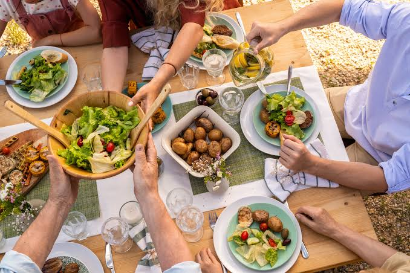

Nuestra historia

Nuestra cafetería vegana nació en 2022 con el propósito de demostrar que la pastelería y el buen café pueden ser 100% libres de crueldad animal sin perder su delicioso sabor. Fundada por dos amigos amantes de la naturaleza, lo que comenzó como un pequeño local de barrio se transformó rápidamente en un punto de encuentro comunitario. Hoy en día, elaboramos cada receta utilizando ingredientes locales, orgánicos y de comercio justo. Desde nuestro café de especialidad con leche de almendras hasta los rollos de canela horneados cada mañana, creamos un espacio sostenible, saludable y acogedor para todos.